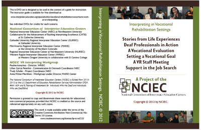

Vocational Rehabilitation
In this section, an overview of interpreting in the Vocational Rehabilitation (VR) setting is provided, along with a description of the activities in which the NCIEC is engaged related to this area of specialization. Resources that will be developed through the NCIEC collaborative are discussed, and links are provided for further exploration of the standards and practices associated with interpreting in the VR settings.
Deaf and Deaf-Blind individuals served by vocational rehabilitation receive a wide range of services, all geared toward assisting individuals with transitioning from school to work and/or gaining additional work-related skills and knowledge as changes in jobs and industries transpire. Employment as an interpreter in a state VR agency provides opportunities for ongoing collaboration with other professionals employed by the agency, and the potential to be part of a team-based approach to serving deaf/hard of hearing individuals.
Interpreters working in this setting report that most of their assignments are related to employment placement; postsecondary/vocational training; employment preparation, and career assessment settings (NCIEC, 2010). For those interpreters working as employees of a state VR agency, they are also often trained as job coaches as a second level responsibility to interpreting, thereby allowing the interpreter to develop additional skills and proficiencies.
Vocational Rehabilitation (VR) Services agencies report a shortage of qualified and certified interpreters to work in this setting (NCIEC, 2009). This shortage is the result of a range of factors, but includes a lack of specialized training for individuals seeking work in this setting. As well, the use of video relay and video remote interpreting is being used more frequently to increase access to qualified interpreting services.
The competencies of interpreters working in this setting include the ability to work effectively with Deaf and Deaf-Blind individuals with secondary disabilities and/or with limited language proficiency. Work in VR settings often involves assignments with consumers that are either immigrants or have parents that were immigrants and are not acculturated. As a result, the deaf consumer and/or their family members are not English proficient and sometimes come from countries where there was no formal education for deaf individuals. As well, family members may need spoken language interpreters. There are often language and cultural nuances present that make interpreting very complex.
Certified Deaf Interpreters are often be the best qualified to work with certain VR deaf/hard of hearing consumers, particularly deaf/ hard of hearing VR consumers with secondary disabilities and/or limited language proficiency. However, there is a severe shortage of Certified Deaf Interpreters (CDIs) and/or many interpreters do not know how to collaborate effectively with CDIs. Therefore, interpreters working in this setting must be fluent in both American Sign Language and English, be able to adapt their language and interpreting performance to a wide range of consumers, and have the ability to effectively team with Deaf interpreters.
Interpreters in this setting must also have a broad understanding of the VR system and how it operates, including knowledge of the world of work and a wide range of jobs in different settings. They must have the ability to work collaboratively with a wide range of professionals in meeting the unique needs of VR clients. Add to this the need to be able to deliver competent interpreting services through distance technologies and it is easy to understand the complexities of working in this setting.
There are also a significant number of deaf individuals who work within professional capacities within the VR system. This includes State Coordinators of services to the Deaf, VR counselors who are deaf and a range of other VR professionals. The role of the interpreter in working with these professionals differs from the general work of interpreters in a number of ways— the interpreter for the deaf professional seeks to make decisions that maximize the deaf professional’s ability to immerse him- or herself into and effectively navigate the workplace. As a result, interpreters must possess advanced knowledge of the VR system and state government, and be able to build the social relationships necessary to successfully interpret for professional work teams in action.
Gaining the skills and knowledge necessary to be effective in working with a wide range of deaf VR clients and/or deaf professionals working within the VR system, requires a strong foundation in interpreting and a period of supervised work experience, as evidenced by generalist certification as an interpreter. At the present time, there is no specialized certification for interpreters who work in this setting, but specialized training is highly recommended.
References:
Cokely, D. & E. Winston (2009). Vocational Rehabilitation Needs Assessment Final Report. National Consortium of Interpreter Education.
Winston, E. (2010). Vocational Rehabilitation Interpreter Practitioner Interview Findings. National Consortium of Interpreter Education Centers.
For the 2010-2015 cycle, NCIEC has set as one of its priorities the development and delivery of training modules to prepare interpreters to interpret in vocational rehabilitation settings. The NIEC has produced a VR Engagement Manual for interpreter education programs to partner with local Vocational Rehabilitation agencies for practicum purposes. To view the manual, click here.
Learning content for five modules has been specified and field-tested. Though these modules were designed as college credit courses, Study Guides for each module are available in the Resources section of this page. The modules are inclusive of content, PowerPoints, media, assignment descriptions, rubrics, and readings.
The NIEC has developed two modules on the topic of interpreting in VR Settings. These modules are designed to integrate into interpreting education curricula. Each module includes a complete 6-hour (often more) primer including readings, lectures, assessments and other resources. These modules are available free of charge at interpretereducation.org/online.
An instructor’s package, including DVDs of VR scenarios, has been distributed to all the attendees during the Conference of Interpreter Trainers (CIT) convention in October, 2012.
Ultimately, the goal of this project is to enhance the quality, availability, and utilization of interpreters in VR settings by establishing state-of-the-art subject matter content for application to training activities including a series of online knowledge and skill modules, pre-service modules and VR internship activities. NCIEC also has the goal of assisting VR service providers and VR consumers in effective utilization of interpreting services.
If you are interested in learning more about or participating in this initiative, contact Anna Witter-Merithew (anna.witter-merithew@unco.edu) who serves as the lead for the NCIEC workgroup on Interpreting in the VR setting.
Resources
NCIEC VR Work Team.(2012). Interpreting in vocational rehabilitation settings: Annotated bibliography. National Consortium of Interpreter Education Center.
The annotated bibliography identifies each publication reviewed indicating its salient points and relevance/contribution to training interpreters to work in the VR setting.
NCIEC VR Work Team. (2012). Interpreting in vocational rehabilitation settings: Domains and competencies. National Consortium of Interpreter Education Center.
A foundation of knowledge and competencies required for interpreters in this setting has been established and has been built on through contributions of an expert panel and additional stakeholder contribution through a series of focus groups during 2011-2012.
NCIEC VR Work Team. (2012). Interpreting in vocational rehabilitation settings: Expert and focus group findings. National Consortium of Interpreter Education Center.
May 25-26, 2011 an expert panel was hosted in Denver, Colorado for the purpose of formulating a strategy, process and procedures for collecting expert opinion and data regarding the competencies and content knowledge needed by interpreters working in the VR setting. VR, as a system and the current trends impacting that system, were explored. From this meeting, a foundation of knowledge and competencies required for interpreters in this setting has been established and has been built on through additional stakeholder contribution through a series of focus groups during 2011-2012.
NCIEC VR Work Team. (2012). Interpreting in vocational rehabilitation settings: Literature review. National Consortium of Interpreter Education Center.
Another activity contributing to the development of the training modules is a review of literature and curriculums currently available. The literature review provides an analysis of published literature related to interpreting in the VR setting.
NURIEC. (2012). An ASL Glossary of VR Terms. Regional Interpreter Education Center at Northeastern University.
These videos are ASL explanations of terms that are commonly used within the vocational rehabilitation process. They are not designed to give you the way to sign a specific term. They are not an attempt at developing consistent translations for the same term. Rather, they are designed to give you some options for ways of understanding and talking about the concepts in ASL.
Interpreting in Vocational Rehabilitation Study Guides
The NCIEC developed this series of study guides to provide examples of how the competencies of VR interpreters (NCIEC VR Work Team, 2012) can be translated into curricula. The five units address various aspects of the VR system and provide practitioners with a foundation in the law, regulations, theories, and practices that underpin VR’s services to individuals with disabilities. The Study Guides, originally designed for a series of online modules are also being used by a select group of interpreter trainers across the country, include roadmaps of instructional activities, full descriptions of assignments, and rubrics for assessing learning
The Study Guides provided here were developed by the MARIE Center and the University of Northern Colorado (UNCO) for five, for-credit courses offered by UNCO. The content of the Guides has not been changed. If you wish to utilize the Study Guides, you must review them in their entirety and modify the content to meet your specific needs. Please note that some readings are not available due to copyright limitations. However, citation information is provided so you may find those readings on your own. Within the “Roadmap” section of each Study Guide, links to video presentations and PowerPoint presentations are live. They may not be live elsewhere in the documents. With the passage of time, some links may be broken. To the extent possible, we’ve tried to keep links updated but do not guarantee their availability.
We’re certain you’ll find these Guides to be a tremendous professional development resource for the interpreter interested in Community Interpreting or Vocational Rehabilitation settings.
Interpreting in VR Settings Module 1: VR as a Federally Mandated System Study Guide, Fall 2012
Interpreting in VR Settings Module 2: Roles and Responsibilities, Spring 2014
Interpreting in VR Settings Module 3: Interpreting for Deaf Professionals, Summer 2014
Interpreting in VR Settings Module 4: Interpreting for VR Clients – Knowledge, Spring 2014
Interpreting in VR Settings Module 5: Interpreting for VR Clients – Skills, Fall 2014
Interpreting in VR Settings DVD Series 6-Pack
 A set of six DVDs capturing authentic scenarios that occur within the context of Vocational Rehabilitation settings. The six titles include “Stories from Life Experiences,” “Deaf Professionals in Action,” “A Vocational Evaluation,” “Setting a Vocational Goal,” “A VR Staff Meeting” and “Support in the Job Search.” Each DVD has between 20-60 minutes of text involving VR Deaf, DeafBlind and hard of hearing consumers, Deaf Professionals working in the VR context, and other VR professionals. The texts can be viewed with or without an interpreter and with or without captions.
To access the DVD 6 pack, click here.